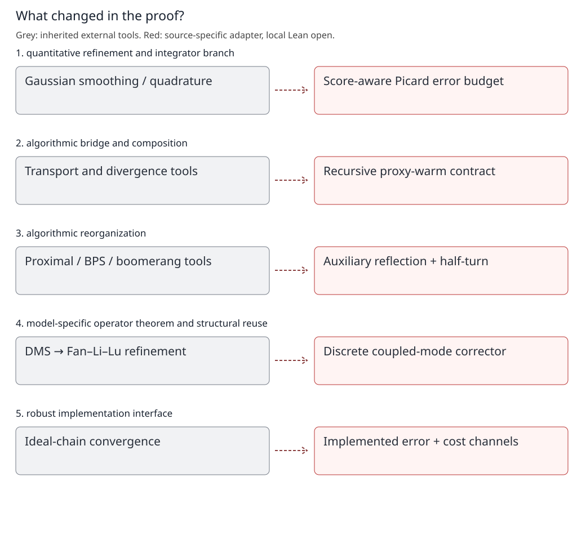

What did these papers add to the proof graph?
Help researchers see which proof mechanisms are inherited, adapted, strengthened or newly composed before Lean compilation is complete.
Contribution roles are source-backed reading judgments, not an exhaustive priority/novelty survey. No local proof, measured centrality, or certified graph compression is inferred.


Which Jianfeng Lu-related technology is being reused?
- Dolbeault–Mouhot–Schmeiser: Modified-L2 framework. PBPS references [DMS15] and Appendix B.3; historical attribution, not a newly audited DMS theorem.
- Zexi Fan · Bowen Li · Jianfeng Lu: Gap-shifted continuous-time refinement. Section 2; cited explicitly in PBPS Appendix B.3.
- Chen · Chewi · Lu · Zhang: Discrete reflection / half-turn adaptation. Lemma B.1, Proposition B.2, (B.19)–(B.20), Lemmas B.3–B.4.
The Fan–Li–Lu paper supplies a gap-shifted corrector in continuous-time underdamped Langevin analysis. PBPS explicitly credits that refinement, then proves its own discrete reflection and half-turn estimates. This is a mechanism lineage, not verbatim reuse of a convergence theorem.
Local formalization open · quantitative refinement and integrator branch
Regularity becomes an algorithmic resource
Already available in the literature
Gaussian convolution and high-order integration are existing tools; higher-order HMC normally pays for stronger smoothness assumptions.
What this paper changes
Density smoothing supplies controlled derivative tensors; Picard/quadrature analysis also tracks the implementable smoothed-score bias and fluctuations.
Structure exposed by the proof
Separate regularity production from trajectory integration and from the oracle that evaluates the score.
Source: 2609.06906v1. Sections 3.1–3.3, Lemmas 4.1–4.3, Sections 4.4 and 5
Not a claim that Gaussian smoothing or Picard iteration was invented here; do not replace density smoothing by E[V(x+noise)].
Expandable technology nodes: tech:density-smoothing · tech:picard-integrator
Local formalization open · algorithmic bridge and composition
A proxy law creates a reusable handoff
Already available in the literature
Wasserstein control compares displacement; Renyi control compares density ratios. Neither metric name by itself supplies an algorithmic conversion.
What this paper changes
Moment truncation, Gaussian regularization and recursive RGO sampling construct an implementable law near a Renyi-certified proxy.
Structure exposed by the proof
The certificate is a pair: actual-law-to-proxy TV plus proxy-to-target Renyi. A downstream kernel can consume it without sampling the proxy.
Source: 2609.06906v1. Lemmas 6.2–6.4; Theorems 6.1, 7.1(ii); Section 7.2
ProxyWarm is explanatory mathematical notation, not an existing Lean structure or a genuine Renyi bound for mu.
Expandable technology nodes: tech:proxy-warm · tech:tv-handoff
Local formalization open · algorithmic reorganization
Local motion preserves useful memory
Already available in the literature
Ordinary proximal updates redraw conditionals; vanilla BPS has straight flights; boomerang-type methods use quadratic reference dynamics.
What this paper changes
Auxiliary reflection and a conditional harmonic half-turn are combined with occasional resampling, rather than equilibrating each local process independently.
Structure exposed by the proof
At a half-period the fresh momentum disappears from the no-bounce position, but the incoming displacement survives with reversed sign.
Source: 2609.06905v1. Section 3.1; (3.8)–(3.11); Proposition 3.1; Appendix A
The displayed half-turn identity is the no-bounce path, not the full random transition. Reflection alone does not establish acceleration.
Expandable technology nodes: tech:reflection · tech:half-turn
Local formalization open · model-specific operator theorem and structural reuse
The inherited framework needs a discrete adapter
Already available in the literature
DMS supplies modified-L2 hypocoercivity; Fan–Li–Lu sharpen it for underdamped Langevin using a gap-shifted corrector.
What this paper changes
PBPS proves macroscopic reflection coercivity and a global half-turn bound, then builds a discrete corrector adapted to the one-step operator.
Structure exposed by the proof
Polar decomposition isolates the microscopic directions coupled to macro modes. In a no-damping, ideal-half-turn model these two components form an operator-valued rotation.
Source: 2609.06905v1. Lemma B.1; Proposition B.2; Appendix B.3, immediately after (B.20)
This rotation describes K_id=U(P-P_perp), with rho=0 and idealized H_perp,perp=-I. It is not the exact implemented chain; actual damping and half-turn defects must be estimated.
Expandable technology nodes: tech:discrete-hypocoercivity
Local formalization open · robust implementation interface
Accuracy and cost require different certificates
Already available in the literature
An ideal invariant kernel and a warm-law convergence theorem need not describe an executable algorithm from the actual input.
What this paper changes
Capped solver and event routines, approximate RGO calls and coupling budgets give an implemented kernel whose cost can be controlled beyond the proxy law.
Structure exposed by the proof
Proof composition has two channels: TV data processing for error, conditional uniform query bounds for expected cost.
Source: 2609.06905v1. Algorithm 2; Theorem 4.3, (4.17)–(4.18); SPHMC Section 7.2
Error addition needs the same probability kernel. Cost addition needs the real input's integrable query count, not TV closeness alone.
Expandable technology nodes: tech:implemented-kernel · tech:tv-handoff
Inside the discrete modified-L2 mechanism
All operators below act on the source-defined augmented L2 space; the macro inverse is restricted to its centered subspace. These are source formulas, not local Lean certificates.
Expose the part ordinary L2 misses
\[\|\mathsf K f\|^2-\|f\|^2\le-\rho\|f_\perp\|^2\]P is conditional expectation given Y in the augmented law, and f_perp=(I-P)f. If f=Pf, this bound supplies no strict decrease. The missing control is mathematical, not a tactic problem.
Source: 2609.06905v1. PBPS (B.18)
Identify the coupled directions
\[\mathsf U_{\perp\mathsf P}=\mathsf V_{\perp\mathsf P}\Gamma_{\mathsf P},\qquad f_{\mathsf V}=\mathsf V_{\perp\mathsf P}^{*}f_\perp\]U is the augmented-reflection operator. Its off-diagonal block maps macro modes into micro modes. Polar decomposition separates the strength Gamma from the isometric direction V; both f_P and f_V now lie in the same centered macro space.
Source: 2609.06905v1. PBPS (B.16); Appendix B.3
Correct the energy in the coupled two-component space
\[\begin{gathered}\mathscr L_\omega(f)=\|f\|^2+\omega\mathscr C(f_{\mathsf P},f_{\mathsf V}),\\\mathscr C(a,b)=\tfrac12(\|a\|^2-\|b\|^2)-\langle\mathsf U_{\mathsf{PP}}\Gamma_{\mathsf P}^{-1}a,b\rangle.\end{gathered}\]The inverse is only on the centered macro subspace, where the macroscopic gap bounds Gamma away from zero. First prove that this energy is comparable to the ordinary norm, then estimate its one-step change. It would be false to invert Gamma on constants.
Source: 2609.06905v1. PBPS (B.19)–(B.20); Lemmas B.3–B.4
Pay for the real half-turn defect
\[\|(I+\mathsf H_{\perp\perp})\mathsf V_{\perp\mathsf P}v\|^2\le C\log(1/\gamma_{\rm gap})\|\Gamma_{\mathsf P}v\|^2\]Under the source small-beta-eta condition, Proposition B.2 controls the error in replacing the half-turn by -I on the relevant directions. Combined with macroscopic coercivity, this makes the corrected energy decay and yields block L2 contraction. This model-specific estimate is a major new formalization branch, not an imported continuous-time theorem.
Source: 2609.06905v1. PBPS Proposition B.2; Appendix C; Theorem 3.5
Lean proof architecture — not formalized yet
First port projection and polar-decomposition contracts, then the two source-specific estimates, then the modified-energy assembly. Current scalar-decay modules are search substrates only; none certify this mechanism.
No corresponding ASTIS declaration is asserted. Search locations below are candidates, not established dependencies or copied library proofs.